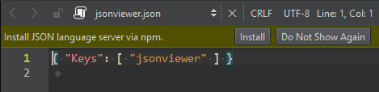
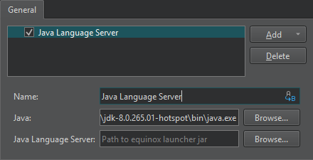

Language Servers
For several programming languages, a language server offers information about the code to IDEs as long as they support communication via the language server protocol (LSP). The IDE can then offer the following services:
- Code completion
- Sending document formatting requests to the language server to automatically format documents using the settings specified in Preferences > Text Editor > Behavior
- Highlighting the symbol under cursor
- Viewing function tooltips
- Semantic highlighting, as defined in Proposal of the semantic highlighting protocol extension
- Navigating in the code by using the locator or moving to the symbol definition
- Inspecting code by viewing the document outline in the Outline view or in the Symbols list on the editor toolbar
- Viewing the callers and callees of a function
- Finding references to symbols
- Renaming the symbol under the cursor
- Code actions
- Displaying diagnostics from the language server as tooltips. You can also select a code range to display diagnostics for.
By providing a client for the language server protocol, Qt Creator can support the above features for several other programming languages besides C++. However, the client does not support language servers that require special handling.
Adding MIME Types for Language Servers
Qt Creator uses the MIME type of the file to determine which language server to request information from when you open a file for editing. Add new MIME types or file patterns to match language servers. If you do not set at least one MIME type or file pattern, no files will be sent to the language server. This is done to avoid unnecessary traffic and inaccurate information, as files are only sent to the language server if they are known to be handled by it. For more information about how Qt Creator uses MIME types, see Edit MIME types.
Adding Language Servers
Qt Creator adds a Python language server by default.
Also, it offers to install language servers for JSON and YAML files when you open them in the editor if it can find the NPM package manager on the computer.

Add a Java language server for Android development. For other languages, add generic stdIO language servers.
To add language servers, go to Preferences > Language Client and select Add.

To enable a language server, select the check box next to the language server name and set server preferences.
To remove language servers from the list, select Delete.
Supported Locator Filters
The locator enables you to browse not only files, but any items defined by locator filters. The language client plugin supports the following locator filters:
- Locating symbols in the current project (
:) - Locating symbols in the current document (
.) - Locating class (
c), enum, and function (m) definitions in your project
Reporting Issues
The language server client has been mostly tested with Python and C++. If problems arise when you try them or some other language, please select Help > Report Bug to report them in the Qt Project Bug Tracker. The reports should include Qt Creator console output with the environment variable QT_LOGGING_RULES=qtc.languageclient.*=true set.
See also How To: Manage Language Servers and Behavior.